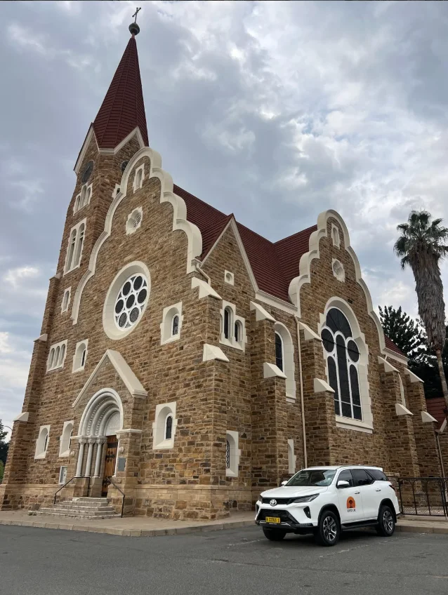

Contact & booking
Request a Quote
Send us your dates, how long you need the Fortuner and where you would like to collect it — Swakopmund, Hosea Kutako or Walvis Bay Airport. We will confirm availability and come back with a quote.
Or Message Us Directly
WhatsApp is the fastest way to reach us, and it works the same whether you are in Swakopmund or on another continent.
Good to Know
- Based in Swakopmund, Namibia — collect from us here
- Also at Hosea Kutako or Walvis Bay Airport — a fixed transfer fee applies, confirmed in your quote
- We are on Central Africa Time (UTC+2) — allow for the time difference when you are waiting on a reply